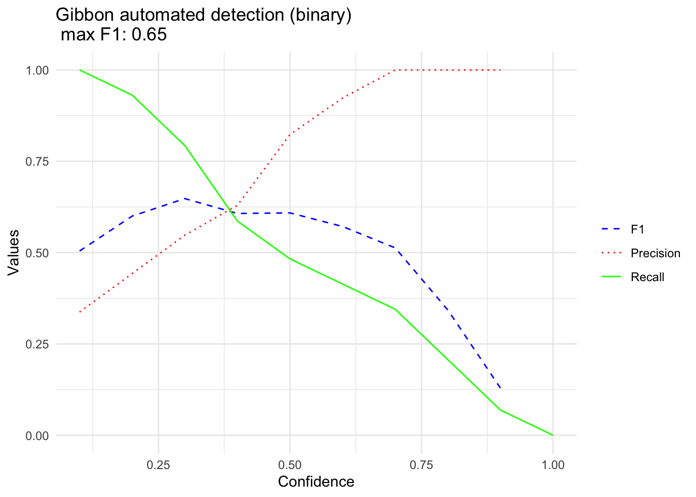

2 Part 2. Run the detector/classifier
2.1 Part 2a. Feature extraction
# Specify the folder where the training data will be saved
TrainingDataFolderLocation <- "/Users/denaclink/Library/CloudStorage/Box-Box/gibbonRSampleFiles/TrainingDataFromRavenSelectionTables/"
TrainingDataMFCC <- MFCCFunction(input.dir= TrainingDataFolderLocation, min.freq = 400, max.freq = 1600,win.avg="standard")
#> [1] "processing sound event 1 out of 53"
#> [1] "processing sound event 2 out of 53"
#> [1] "processing sound event 3 out of 53"
#> [1] "processing sound event 4 out of 53"
#> [1] "processing sound event 5 out of 53"
#> [1] "processing sound event 6 out of 53"
#> [1] "processing sound event 7 out of 53"
#> [1] "processing sound event 8 out of 53"
#> [1] "processing sound event 9 out of 53"
#> [1] "processing sound event 10 out of 53"
#> [1] "processing sound event 11 out of 53"
#> [1] "processing sound event 12 out of 53"
#> [1] "processing sound event 13 out of 53"
#> [1] "processing sound event 14 out of 53"
#> [1] "processing sound event 15 out of 53"
#> [1] "processing sound event 16 out of 53"
#> [1] "processing sound event 17 out of 53"
#> [1] "processing sound event 18 out of 53"
#> [1] "processing sound event 19 out of 53"
#> [1] "processing sound event 20 out of 53"
#> [1] "processing sound event 21 out of 53"
#> [1] "processing sound event 22 out of 53"
#> [1] "processing sound event 23 out of 53"
#> [1] "processing sound event 24 out of 53"
#> [1] "processing sound event 25 out of 53"
#> [1] "processing sound event 26 out of 53"
#> [1] "processing sound event 27 out of 53"
#> [1] "processing sound event 28 out of 53"
#> [1] "processing sound event 29 out of 53"
#> [1] "processing sound event 30 out of 53"
#> [1] "processing sound event 31 out of 53"
#> [1] "processing sound event 32 out of 53"
#> [1] "processing sound event 33 out of 53"
#> [1] "processing sound event 34 out of 53"
#> [1] "processing sound event 35 out of 53"
#> [1] "processing sound event 36 out of 53"
#> [1] "processing sound event 37 out of 53"
#> [1] "processing sound event 38 out of 53"
#> [1] "processing sound event 39 out of 53"
#> [1] "processing sound event 40 out of 53"
#> [1] "processing sound event 41 out of 53"
#> [1] "processing sound event 42 out of 53"
#> [1] "processing sound event 43 out of 53"
#> [1] "processing sound event 44 out of 53"
#> [1] "processing sound event 45 out of 53"
#> [1] "processing sound event 46 out of 53"
#> [1] "processing sound event 47 out of 53"
#> [1] "processing sound event 48 out of 53"
#> [1] "processing sound event 49 out of 53"
#> [1] "processing sound event 50 out of 53"
#> [1] "processing sound event 51 out of 53"
#> [1] "processing sound event 52 out of 53"
#> [1] "processing sound event 53 out of 53"
TrainingDataMFCC$class <- as.factor(TrainingDataMFCC$class)2.2 Part 2b. Run the detector/classifier using the ‘gibbonR’ function.
TestFileDirectory <- '/Users/denaclink/Library/CloudStorage/Box-Box/gibbonRSampleFiles/GibbonTestFiles/'
OutputDirectory <- "/Users/denaclink/Library/CloudStorage/Box-Box/gibbonRSampleFiles/DetectAndClassifyOutput"
dir.create(OutputDirectory,recursive = TRUE)
#> Warning in dir.create(OutputDirectory, recursive = TRUE):
#> '/Users/denaclink/Library/CloudStorage/Box-Box/gibbonRSampleFiles/DetectAndClassifyOutput' already
#> exists
gibbonR(input=TestFileDirectory,
input.type = 'directory',
feature.df=TrainingDataMFCC,
model.type.list=c('SVM','RF'),
tune = TRUE,
short.wav.duration=300,
target.signal = c("female.gibbon"),
min.freq = 400, max.freq = 1600,
noise.quantile.val=0.15,
minimum.separation =3,
n.windows = 9, num.cep = 12,
spectrogram.window =160,
pattern.split = ".wav",
min.signal.dur = 3,
max.sound.event.dur = 25,
maximum.separation =1,
probability.thresh.svm = 0.15,
probability.thresh.rf = 0.15,
wav.output = "FALSE",
output.dir =OutputDirectory,
swift.time=TRUE,time.start=5,time.stop=10,
write.table.output=TRUE,verbose=TRUE,
random.sample='NA')
#> [1] "Machine learning in progress..."
#> [1] "SVM in progress..."
#> [1] "SVM accuracy 98.1132075471698"
#> Time difference of 1.382857 secs
#> [1] "RF in progress..."
#>
#> Call:
#> randomForest(x = feature.df[, 2:ncol(feature.df)], y = feature.df$class)
#> Type of random forest: classification
#> Number of trees: 500
#> No. of variables tried at each split: 13
#>
#> OOB estimate of error rate: 9.43%
#> Confusion matrix:
#> female.gibbon noise class.error
#> female.gibbon 23 3 0.11538462
#> noise 2 25 0.07407407
#> Time difference of 0.05543208 secs
#> [1] "Classifying for target signal female.gibbon"
#> [1] "Computing spectrogram for file S11_20180217_080003 1 out of 1"
#> [1] "Running detector over sound files"
#> [1] "Creating datasheet"
#> [1] "Saving Sound Files S11_20180217_080003 1 out of 1"
#> [1] "System processed 7201 seconds in 12 seconds this translates to 576.8 hours processed in 1 hour"# Load necessary libraries
library(stringr) # For string manipulation
library(caret) # For machine learning and model evaluation
library(ggpubr) # For data visualization
library(dplyr) # For data manipulation
library(data.table) # For sorting the detections
library(ggplot2)
# NOTE you need to change the file paths below to where your files are located on your computer
# KSWS Performance Binary --------------------------------------------------------
# Get a list of TopModel result files
TopModelresults <- list.files('/Users/denaclink/Library/CloudStorage/Box-Box/gibbonRSampleFiles/DetectAndClassifyOutput',
full.names = TRUE)
# Get a list of annotation selection table files
TestDataSet <- list.files('/Users/denaclink/Library/CloudStorage/Box-Box/gibbonRSampleFiles/SelectionTables/GibbonTestSelectionTables',
full.names = TRUE)
start.time.buffer <- 12
end.time.buffer <- 12
# Preallocate space for TopModelDetectionDF
TopModelDetectionDF <- data.frame()
# Loop through each TopModel result file
for (f in 1:length(TopModelresults)) {
# Read the TopModel result table into a data frame
TempTopModelTable <- read.delim2(TopModelresults[f])
# Extract the short name of the TopModel result file
ShortName <- basename(TopModelresults[f])
ShortName <- str_split_fixed(ShortName, pattern = 'gibbonR', n = 2)[, 1]
# Find the corresponding annotation selection table
testDataIndex <- which(str_detect(TestDataSet, ShortName))
if(length(testDataIndex) > 0 ){
TestDataTable <- read.delim2(TestDataSet[testDataIndex])
# Round Begin.Time..s. and End.Time..s. columns to numeric
TestDataTable$Begin.Time..s. <- round(as.numeric(TestDataTable$Begin.Time..s.))
TestDataTable$End.Time..s. <- round(as.numeric(TestDataTable$End.Time..s.))
DetectionList <- list()
# Loop through each row in TempTopModelTable
for (c in 1:nrow(TempTopModelTable)) {
TempRow <- TempTopModelTable[c,]
# Check if Begin.Time..s. is not NA
if (!is.na(TempRow$Begin.Time..s.)) {
# Convert Begin.Time..s. and End.Time..s. to numeric
TempRow$Begin.Time..s. <- as.numeric(TempRow$Begin.Time..s.)
TempRow$End.Time..s. <- as.numeric(TempRow$End.Time..s.)
# Determine if the time of the detection is within the time range of an annotation
TimeBetween <- data.table::between(TempRow$Begin.Time..s.,
TestDataTable$Begin.Time..s. - start.time.buffer,
TestDataTable$End.Time..s. + end.time.buffer)
# Extract the detections matching the time range
matched_detections <- TestDataTable[TimeBetween, ]
if (nrow(matched_detections) > 0) {
# Set signal based on the Call.Type in matched_detections
TempRow$signal <- 'Gibbon'
DetectionList[[length( unlist(DetectionList))+1]] <- which(TimeBetween == TRUE)
} else {
# Set signal to 'Noise' if no corresponding annotation is found
TempRow$signal <- 'noise'
}
# Append TempRow to TopModelDetectionDF
TopModelDetectionDF <- rbind.data.frame(TopModelDetectionDF, TempRow)
}
}
# Identify missed detections
if (length( unlist(DetectionList)) > 0 & length( unlist(DetectionList)) < nrow(TestDataTable) ) {
missed_detections <- TestDataTable[-unlist(DetectionList), ]
# Prepare missed detections data
missed_detections <- missed_detections[, c("Selection", "View", "Channel", "Begin.Time..s.", "End.Time..s.", "Low.Freq..Hz.", "High.Freq..Hz.")]
missed_detections <- missed_detections
missed_detections$File.Name <- ShortName
missed_detections$model.type <- 'SVM'
missed_detections$probability <- 0
missed_detections$signal <- 'Gibbon'
# Append missed detections to TopModelDetectionDF
TopModelDetectionDF <- rbind.data.frame(TopModelDetectionDF, missed_detections)
}
if (length( unlist(DetectionList)) == 0) {
missed_detections <- TestDataTable
# Prepare missed detections data
missed_detections <- missed_detections
missed_detections$File.Name <- ShortName
missed_detections$model.type <- 'SVM'
missed_detections$probability <- 0
missed_detections$signal <- 'Gibbon'
# Append missed detections to TopModelDetectionDF
TopModelDetectionDF <- rbind.data.frame(TopModelDetectionDF, missed_detections)
}
}
}
head(TopModelDetectionDF)
#> Selection View Channel Begin.Time..s. End.Time..s. Low.Freq..Hz. High.Freq..Hz.
#> 1 1 Spectrogram 1 1 15.231 20.911 400 1600
#> 2 2 Spectrogram 1 1 26.191 49.982 400 1600
#> 3 3 Spectrogram 1 1 51.342 56.542 400 1600
#> 4 4 Spectrogram 1 1 92.883 100.613 400 1600
#> 5 5 Spectrogram 1 1 102.303 144.125 400 1600
#> 6 6 Spectrogram 1 1 108.404 119.474 400 1600
#> File.Name model.type probability signal
#> 1 S11_20180217_080003 RF 0.192 noise
#> 2 S11_20180217_080003 RF 0.472 noise
#> 3 S11_20180217_080003 RF 0.44 noise
#> 4 S11_20180217_080003 RF 0.414 noise
#> 5 S11_20180217_080003 RF 0.7 noise
#> 6 S11_20180217_080003 SVM 0.219 noise
nrow(TopModelDetectionDF)
#> [1] 86
table(TopModelDetectionDF$signal)
#>
#> Gibbon noise
#> 29 57
# Convert signal column to a factor variable
TopModelDetectionDF$signal <- as.factor(TopModelDetectionDF$signal)
# Display unique values in the signal column
unique(TopModelDetectionDF$signal)
#> [1] noise Gibbon
#> Levels: Gibbon noise
# Define a vector of confidence Thresholds
Thresholds <-seq(0.1,1,0.1)
# Create an empty data frame to store results
BestF1data.frameGibbonBinary <- data.frame()
# Loop through each threshold value
for(a in 1:length(Thresholds)){
# Filter the subset based on the confidence threshold
TopModelDetectionDF_single <-TopModelDetectionDF
TopModelDetectionDF_single$Predictedsignal <-
ifelse(TopModelDetectionDF_single$probability <=Thresholds[a], 'noise','Gibbon')
# Calculate confusion matrix using caret package
caretConf <- caret::confusionMatrix(
as.factor(TopModelDetectionDF_single$Predictedsignal),
as.factor(TopModelDetectionDF_single$signal),positive = 'Gibbon',
mode = 'everything')
# Extract F1 score, Precision, and Recall from the confusion matrix
F1 <- caretConf$byClass[7]
Precision <- caretConf$byClass[5]
Recall <- caretConf$byClass[6]
FP <- caretConf$table[1,2]
TN <- sum(caretConf$table[2,])#+JahooAdj
FPR <- FP / (FP + TN)
# Create a row for the result and add it to the BestF1data.frameGreyGibbon
#TrainingData <- training_data_type
TempF1Row <- cbind.data.frame(F1, Precision, Recall,FPR)
TempF1Row$Thresholds <- Thresholds[a]
BestF1data.frameGibbonBinary <- rbind.data.frame(BestF1data.frameGibbonBinary, TempF1Row)
}
#> Warning in confusionMatrix.default(as.factor(TopModelDetectionDF_single$Predictedsignal), : Levels are
#> not in the same order for reference and data. Refactoring data to match.
#> Warning in confusionMatrix.default(as.factor(TopModelDetectionDF_single$Predictedsignal), : Levels are
#> not in the same order for reference and data. Refactoring data to match.
BestF1data.frameGibbonBinary
#> F1 Precision Recall FPR Thresholds
#> F1 0.5043478 0.3372093 1.00000000 1.00000000 0.1
#> F11 0.6000000 0.4426230 0.93103448 0.57627119 0.2
#> F12 0.6478873 0.5476190 0.79310345 0.30158730 0.3
#> F13 0.6071429 0.6296296 0.58620690 0.14492754 0.4
#> F14 0.6086957 0.8235294 0.48275862 0.04166667 0.5
#> F15 0.5714286 0.9230769 0.41379310 0.01351351 0.6
#> F16 0.5128205 1.0000000 0.34482759 0.00000000 0.7
#> F17 0.3428571 1.0000000 0.20689655 0.00000000 0.8
#> F18 0.1290323 1.0000000 0.06896552 0.00000000 0.9
#> F19 NA NA 0.00000000 0.00000000 1.0
GibbonMax <- round(max(na.omit(BestF1data.frameGibbonBinary$F1)),2)
# Metric plot
GibbonBinaryPlot <- ggplot(data = BestF1data.frameGibbonBinary, aes(x = Thresholds)) +
geom_line(aes(y = F1, color = "F1", linetype = "F1")) +
geom_line(aes(y = Precision, color = "Precision", linetype = "Precision")) +
geom_line(aes(y = Recall, color = "Recall", linetype = "Recall")) +
labs(title = paste("Gibbon automated detection (binary) \n max F1:",GibbonMax),
x = "Confidence",
y = "Values") +
scale_color_manual(values = c("F1" = "blue", "Precision" = "red", "Recall" = "green"),
labels = c("F1", "Precision", "Recall")) +
scale_linetype_manual(values = c("F1" = "dashed", "Precision" = "dotted", "Recall" = "solid")) +
theme_minimal() +
theme(legend.title = element_blank())+
labs(color = "Guide name", linetype = "Guide name", shape = "Guide name")
GibbonBinaryPlot
#> Warning: Removed 1 row containing missing values or values outside the scale range (`geom_line()`).
#> Warning: Removed 1 row containing missing values or values outside the scale range (`geom_line()`).